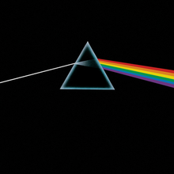

Discography
The Piper at the Gates of Dawn

The Piper at the Gates of Dawn is the debut studio album by English
rock band Pink Floyd, released on 5 August 1967 by EMI Columbia.
A Saucerful of Secrets
A Saucerful of Secrets is the second studio album by the English rock
band Pink Floyd, released on 28 June 1968 by EMI Columbia.
More

More is the third studio album and first soundtrack album by English
rock band Pink Floyd. It was released on 13 June 1969.
Ummagumma
Ummagumma is the fourth album by English rock band Pink Floyd. It is a
double album and it was released on 7 November 1969 by Harvest
Records.
Atom Heart Mother
Atom Heart Mother is the fifth studio album by the English progressive
rock band Pink Floyd. It was released by Harvest on 2 October 1970.
Meddle

Meddle is the sixth studio album by English rock band Pink Floyd,
released by Harvest Records. The album was produced between the band's
touring commitments, from January to August 1971 at a series of
locations around London, including EMI Studios (now Abbey Road
Studios) and Morgan Studios.
Obscured by Clouds

Obscured by Clouds is the seventh studio album by the English
progressive rock band Pink Floyd, released on 2 June 1972 by Harvest
and Capitol Records.
The Dark Side of the Moon

The Dark Side of the Moon is the eighth studio album by the English
rock band Pink Floyd, released on 1 March 1973 by Harvest Records.
Wish You Were Here
Wish You Were Here is the ninth studio album by the English rock band
Pink Floyd, released on 12 September 1975 through Harvest Records and
Columbia Records.
The Wall

The Wall is the eleventh studio album by the English progressive rock
band Pink Floyd, released on 30 November 1979 by Harvest/EMI and
Columbia/CBS Records.
Division Bell

The Division Bell is the fourteenth studio album by the English
progressive rock band Pink Floyd, released on 28 March 1994 by EMI
Records.